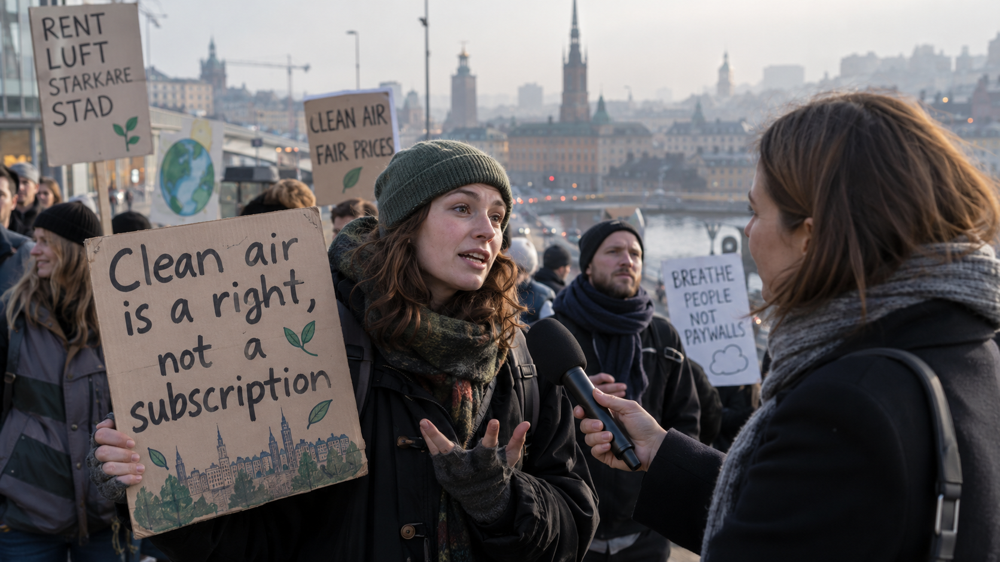

on the ground
“I should not need a premium plan to visit my parents.”
Among the protesters was 31 year old Samir A., who moved to Sweden six years ago and travels twice a year to visit family in a city that now regularly reaches severe air quality levels.
“I understand that equipment costs money. What I do not understand is why the safest level is always the most expensive one. My parents still live there. Going home should not depend on which protection plan I can afford.”
Several people at the protest spoke directly with local reporters while holding handmade signs. Organizers said the demonstration was not against clean air technology itself. They were calling for basic travel protection to be included in public mobility and health support for people with close family ties in high pollution regions.
Outside the building, passersby stopped to scan the protest group’s public message board. The most shared post of the afternoon read: “Clean air is a right, not a subscription.”
I use AirHalo only when visiting my mother. Renting should be easier than buying.